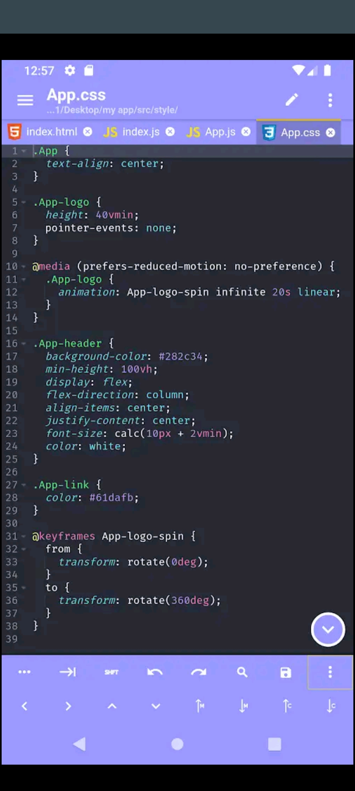
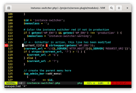

For Coding:-
Code Editors:
Acode
Vim{best as it works on terminal(here termux) also saves space }.
App Making:

Android Studio(can be downloaded with Linux distro).
IDEs:

Its a normal tablet which has some striking features like a touch keyboard, and a intel atom processor which makes it a very premium machine at a budget price. Its 2 in 1 functionality comes in handy for programmers as well as designers.


The use of this device can be truely made when we do the procedures mentioned in the video given. Running Linux with the help of Termux,Andronix/Anlinux and VNC viewer makes it an efficient linux device.